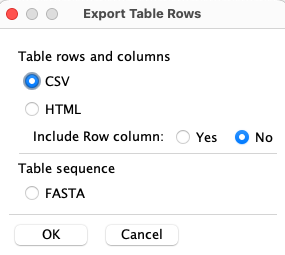

|
|
SyMAP Queries |

|
|
|
|||
| Interface
| Queries
General Single gene Pair hits PgeneFs | Results
Result table Pair hits columns Single gene columns Auto-save columns |
Top button functions Statistics |
Interface
To open the query interface, first select two or more sequence projects in the Project Manager. Then select the

The
Open the
Queries | Go to top |

Rules
|
1. All queries are on the 2. All 3. A hit can align to multiple genes on either or both chromosomes. Only the major gene hit(s) will be shown
except for the following queries: 4. Most filters can be used in conjunction with other filters; options will be disabled if they cannot be used with a selected filter. |

|
1. General | Go to top |
Enter a substring: the entire annotation string (i.e. column
| Chr | Select a specific chromosome for the species. This is the most common query to use in conjunction with others. | |
| From | The | |
| To | The | |
|
For For |
2. Single gene | Go to top |
Orphan genes (no hits)
Genes that do not a have a hit and meet the additional filters. The orphan genes are relative to the projects shown on theInstruction page. For example, if species X, Y and Z have synteny computed between all pairs, but only X and Y are selected, the orphan genes for X would be those with no hits to Y. If X,Y&Z are selected, the orphan genes for X would be those with no hits to Y and Z.
All genes (w/o hits) , i.e. genes with and without hits
This shows all genes that meet the additional filters, regardless if they have a hit or not. There is always the same set of genes for a project, regardless of synteny.
Allowed filters for singles: both options can be restricted by:
- Using the
Project pull-down, select a project. - If a project is selected, then a chromosome and optional location can be selected.
- A
Annotation Description may be entered.
3. Pair hits | Go to top |
| Yes | Only hits that are part of a synteny
block will be returned. All hits will have a value for the | ||
| No | Only hits that are NOT part of a synteny
block will be returned. No hits will have a value for the |
| Every | Only hits that align to a gene on one or both sides of the hit will be shown.
The | ||
| Every* | This is like the | ||
| One | Only hits that align to a gene on ONE side of the will be shown.
The | ||
| Both | Only hits that align to genes on BOTH sides will be shown.
The | ||
| None | Only hits that do NOT align to a gene
on either side of the will be shown. The |
List all hits in collinear sets that have size >= N.
See Collinear, which explains
the SyMAP collinear sets. There are also options to select for collinear sets with size = N or <= N.
List all hits that align to genes with >= N hits. Check
This query with
This can be used in conjunction with other queries, e.g.
Enter a single block number (the
Enter a set number (the
The hits are numbered for each chromosome pair, e.g. there will be a Hit#1 for every chromosome pair that
has hits. If a hit aligns to multiple genes, both major and minor genes will be shown.
Enter a
- If only a number is entered, all genes with the numeric prefix will be displayed (including minor hits).
- If a number.suffix is entered, the exact gene will be displayed (but no minor hits).
- If a
Chr: is selected from the pull-down, the search will be confined to the genes on that specie's chromosome.
4. Filter putative gene families (PgeneFs) | Go to top |
This is only computed if the
Each PgeneF is given a number, which is shown in the Query Results table (column name
Filters using the PgeneF values:
These filters permit searching for gene families shared by one group of species but not
present in another.
If a species is checked to include, then the PgeneF will only be retained if it includes at least one hit which hits that species.
For >2 species only: If a species is checked to exclude, then the PgeneF will be discarded if any of its hits are to that species.
| Find PgeneFs which are not yet annotated. A PgeneF will be discarded if it is annotated on any of
the species which are checked in the | |
| For >2 species only: Require the PgeneF to be fully linked, i.e. for each pair of species A and B in the group, there must be a hit linking A to B. | |
| For >2 species only: Only PgeneF hits will be shown if they have hits to the included species, although the PgeneF numbers will reflect groupings created using all hits. |
Results | Go to top |

| The buttons on the bottom will be | 
|
Click Single Result Table for an example when all three projects
are being queried versus Results when two of the three are being
queried; note that the
{kind=link}
{kind=link}
Results Table | Go to top |
Specifics of rows of
- Generally a hit only aligns to one gene, possibly on both sides. If there are overlapping genes,
it will show the hit aligned to overlapping genes if any of the following queries are used:
Every*, Annotation, Hit# , orGene# (see Rules for a complete explanation). - A gene may be listed more than once if multiple hits align to it with a best overlap.
Specifics of columns:
Pair Hits : The table contains columns for all of the selected species, but each hit only connects two species, and the other species columns are empty.Single genes : If the query specifiedSingle genes, then each row represents one gene and shows data only for one species.
Columns | Go to top |
You can sort the columns by clicking on them, and rearrange them by dragging the header
boxes. You can add/remove columns using the
In the columns panel, hover over a column name to see its brief description. Following are the full descriptions of the columns:
Pair hits columns
| Row number within the table | ||
| Synteny block containing this hit (if any). The format is Cn.Cm.Block#, where Cn and Cm are the chromosome numbers. | ||
| The number of hits which comprise the synteny block. | ||
| Collinear set containing this hit (if any). The format is Cn.Cm.Size.Set# (e.g. 1.2.5.100; there are 5 adjacent gene hits in set# 100 on Chr1 to Chr2). | ||
| If | ||
| If | ||
| The hit number, which are sequential numbers for the chromosome pair.
This number shown on the | ||
| Percent identity of the alignment.The value of the "Identity" column from the MUMmer file. If the hit has subhits, then this is an approximation. | ||
| Percent similarity of the alignment (as determined by the BLOSUM scoring matrix). The value of the "Similarity" column from the MUMmer file. If the hit has subhits, then this is an approximation. | ||
| The number of sub-hits in a clustered hit. | ||
| If "=", both hit ends are to the same strand; if "!=", they are to different strands. | ||
| The length of the subhits within a clustered hit are summed taking into accounts overlaps; the longest summed subhits of both sides is shown. See Clustered Hits in Terminology. | ||
| There are two alternative algorithms for clustering the hits on database creation.
➛ ➛ | ||
|
| ||
| Chromosome of the hit. | ||
| Start and end of the annotated gene. The | ||
| The gene number is C.#.{a-z}. The C is the chromosome number.
The # is the sequential number along the chromosome.
If a run of genes overlap, they receive the
same gene number with different suffixes {a-z, a2-z2, etc}. This is shown on the | ||
| Start and end of the hit region. | ||
| Hend-Hstart+1 | ||
| The value depends on which ➛ ➛ | ||
| The keywords for the annotations of each species are listed; they can be different for each species. See Project Parameters for modifying the keywords shown | ||
Single genes columns
The single genes tables only have the
| This is the number of hits to the gene in the ENTIRE databases, except for SELF synteny.
For example, if X, Y and Z species have all been compared for synteny, but only Y and Z are being queried, the |
Auto-save columns
The columns selection is saved in a file called .symap_saved_props in the user's home directory. If you only have one SyMAP database, there is no need to read the following:Say the last database Dn queried had N species, and the current database Dm has M species, where Dn and Dm are different SyMAP databases:
- If N=M: the
General andGene&Hit Info columns will be set according to the previous settings, but theAnnotation columns may be wrong. - If N>M or N<M: the
General will be according to the previous settings, allGene&Hit Info columns will be set like the first Dn species, and noAnnotation columns will be set.
Top button functions | Go to top |

|
|

|
| 
|
|
|  |
{kind=link}
Statistics | Go to top |

Most of the statistics are self-explanatory except the following: